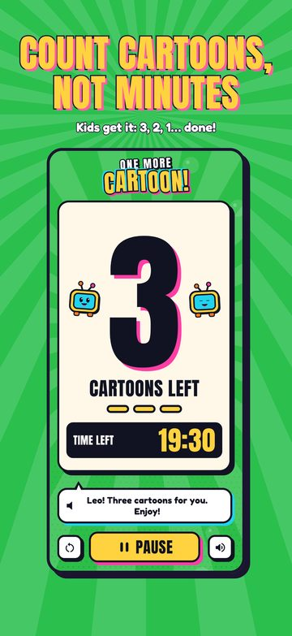
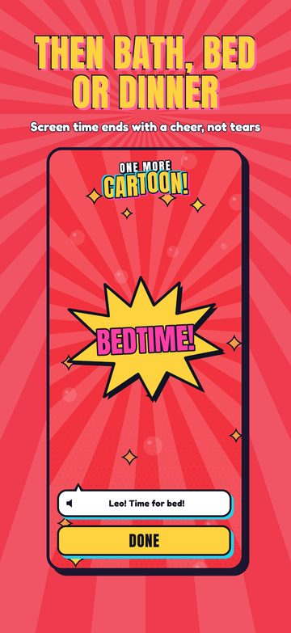
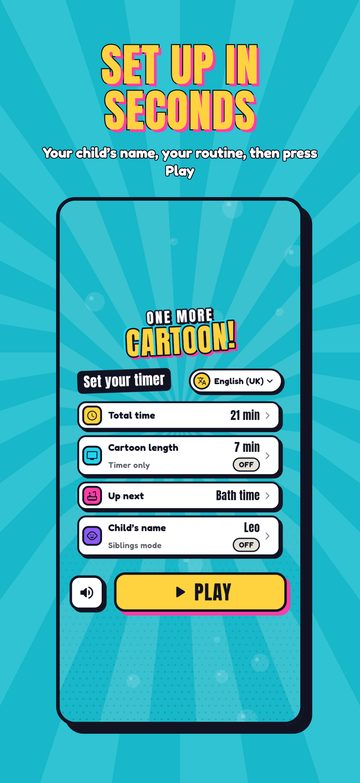

ONE MORE CARTOON!
La cuenta atrás simpática que acaba con la pantalla sin lágrimas.
Una cuenta atrás que los niños entienden de verdad
Gratis para probar · sin cuenta · sin anuncios
▶ Pruébalo ahora, sin descargar
Gratis 30 días · después un solo pago, tuyo para siempre · sin suscripción, sin anuncios
“¡Un dibujo más!” ¿Te suena? One More Cartoon! convierte el final de la pantalla en un juego: en lugar de minutos, tu hijo ve los dibujos que quedan: 3… 2… 1. Una voz alegre avisa antes del último y luego anuncia lo que viene: baño, cama, cena o salir.
Novedad: modo hermanos. Un solo temporizador para hermanos y hermanas: la voz llama a cada niño por su nombre y “¿Quién elige esta noche?” decide por turnos quién elige los dibujos.







Cómo funciona
- Acordad cuántos dibujos quedan. Elige el tiempo total y lo que dura cada dibujo, o cuenta solo episodios.
- Deja correr la cuenta atrás. Un número grande y dos teles bailarinas muestran cuántos quedan; la voz dice “¡Quedan dos dibujos!” y avisa en el último.
- Termina con una fiesta. “¡A dormir, Lucía!” Una pantalla final de cómic convierte el cambio de actividad en parte del juego, no en una pelea.
Por qué gusta a los padres
- Los niños entienden “dos dibujos más” mucho mejor que “diez minutos más”.
- Un aviso amable antes del final, sin sorpresas.
- El nombre de tu hijo en los avisos, o el de todos con el modo hermanos.
- ¿Quién elige esta noche? Una ruleta decide quién elige los dibujos, por turnos y sin discusiones.
- Elige lo que viene después: baño, cama, comida, salir o uno de 40 mensajes listos, con la misma voz.
- 11 idiomas, iPhone y iPad, vertical y horizontal, mantiene la pantalla encendida.
- Sin anuncios, sin cuentas, sin rastreo: todo se queda en tu dispositivo.
¿Quieres consejos? Lee nuestra guía para padres (en inglés).
Preguntas de los padres
¿Para qué edad es?
Para niños pequeños, más o menos de 2 a 7 años, que aún no leen la hora pero sí saben contar dibujos. Lo configura el adulto; el niño solo mira la cuenta atrás.
¿Por qué contar dibujos y no minutos?
Los niños pequeños no tienen sentido del tiempo: “diez minutos más” no significa nada, pero “dos dibujos más” lo ven venir y lo aceptan.
¿Cuánto cuesta? ¿Hay suscripción?
Se descarga gratis y todo es gratis durante 30 días. Después, un único pago lo desbloquea para siempre. Sin suscripción ni anuncios.
¿Funciona con YouTube, Netflix o la tele?
Sí. No controla otras apps ni la tele: funciona al lado de lo que ve tu hijo, en un móvil o tableta cerca.
¿Recoge datos de mi hijo?
No. Sin cuentas, anuncios, estadísticas ni rastreo. Los ajustes y nombres se quedan en tu dispositivo.
¿Está en Android?
La versión de Android está en pruebas en Google Play y llega pronto.